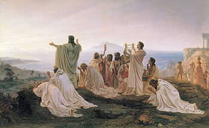
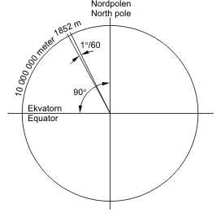

好问题，让我尝试不用公式而用跨越7000年人类文明的方式，来解读e的自然之美，争取有中学基础的人就能看懂。
e有时被称为自然常数（Natural constant），是一个约等于2.71828182845904523536……的无理数。
以e为底的对数称为自然对数（Natural logarithm），数学中使用自然（Natural）这个词的还有自然数（Natural
number）。这里的“自然”并不是现代人所习惯的“大自然”，而是有点儿“天然存在，非人为”的意思。就像我们把食品分
为天然食品和加工食品，天然食品就是未经人为处理的食品。
你也知道，穿越剧都很长(>﹏<)，不喜欢长篇大论的，可直接跳到后面看结论。
“自然”的发明
我们知道，人类历史上曾出现过很多辉煌的文明，例如大家熟知的四大文明：古巴比伦、古埃及、古印度河以及古代
中国。
但是要说谁对现代文明的影响最大？对不起，四大文明谁都排不上！真正对现代文明影响最大的是古希腊文明，特
别是古希腊的哲学、科学思想，是整个现代文明的源头和基石。这里并不是要贬低四大文明，现代文明也从各文明继承了
大量的文化遗产，只是相比古希腊要少很多。
现代人的基础教育，无论是什么国家、什么社会制度、什么民族，在教科书里除了介绍自己的古代成就外（如四大发
明），还会大篇幅的介绍古希腊的科学、哲学思想，来启蒙学生的心智，这是跨越国界的共同做法。
大家都这样做的原因，就是因为古希腊哲学家发明了科学的思维方法和“自然”（Natural）这个词，在理论中用自
然来取代具体的神灵，这是人类文明史上划时代的发明。如果没有这个发明，现代文明可能还会晚出现数千年，所以这是
至关重要的进步。
在古希腊文明之外的古文明里，人们解释世间万物的运行时，总是要引入神灵等超自然、拟人化的因素。例如，
得病了就认为鬼神附体，洪水泛滥就认为天神发怒，石人一出天下就可以造反了，总有一个超自然的神灵在操纵万物的
运行。人们偏爱形象而戏剧化的解释，拟人化的神灵恰恰具有形象、戏剧化的特点，最易于接受和传播。现代喜欢希腊神
话的人数，也远多于喜欢希腊哲学的。电视里最流行各种奇幻故事，例如狼人、吸血鬼什么的。古代人也一样，不同的是
我们知道这是假的，古人则认为是真的，这成为他们理解世界运行的思维定势。
直到公元前624年，泰勒斯的出现，才第一次用自然取代神灵的位置。
其实泰勒斯是个多神论者，他认为神是存在的，是神让万物有了自己内在的规律。但解释万物的运行，不能靠凭空
的制造故事，要靠坚实的证据发现这些规律，并用理性的方法解读。这就是泰勒斯的最大贡献，开创了一套认识世界的
全新思维方法，他关注的是证据、规律、理性，而不是神。
尽管泰勒斯提出的理论现在看起来很粗糙。但是人们不再需要像宗教一样，把旧理论看成是不可否定的权威结论。只
要有坚实的新证据和理性的推理，旧理论可以被修改或推翻，更好的理论就可以建立起来。这是一种可靠的、可进化的理
论体系。相反，宗教是停止进化的、只能膨胀的理论体系，例如你只能解读圣经，但不能否定圣经。
后来的希腊哲学家不断借鉴和发展泰勒斯的理论，建立了“自然”(φύσις)的概念，“自然”代表万物因为本源而发生
自然而然的变化。赫拉克利特还引入了逻各斯（希腊语：λόγος，英语：Logos）的观点，用以说明万物变化的规律性。
逻各斯原来是指语言、演说、交谈、故事、原则等，这里的逻各斯则主要指一种尺度、大小、分寸，即数量上的比例关系。
后来对数的发明人纳皮尔就用Logos和arithmos（算法）创造了单词Logarithm 来命名对数法，经过后人简化变成了
对数符号log。
几乎和古希腊同一时代，春秋战国时代的诸子百家也提出过一些相似的思想，例如老子的道。但很可惜，这种蓬勃
发展的思想爆炸因为诸多原因戛然而止，只是昙花一现。但是限于篇幅，这里不再展开，请到最后的推荐阅读中了解。
“自然”与美
古希腊的学者还给“自然”赋予美的含义，他们认为规律性就是一种和谐感，数学的比例是种超越肉体感官、只能靠
心智才能领悟到的美。毕达哥拉斯就是其中最极端的代表，他对数学美的狂热追求超过了偏执的程度，美像神一样不可
冒犯，毕达哥拉斯主义走向了科学的反面，成了宗教。
这种宗教的狂热驱动他和信徒们不断的去挖掘“自然”之美，并在数学之外的音乐、建筑、雕刻、绘画等领域发现了大
量的比例关系，最有名的是毕达哥拉斯定理（中国叫勾股定理）。毕达哥拉斯认为所有图形中，圆是最对称的，所以圆
是最完美的图形。参见毕达哥拉斯学派美学思想（朱光潜)。
“自然”思想的意义
雷军说得好，“在风口上，猪都会飞”！就像乔布斯开启了移动互联网时代，泰勒斯则开启了古希腊哲学时代。
古希腊时代是一个科学、哲学大爆炸的时代，原本黑暗的天空中突然爆发出无数的新星：赫拉克利特、毕达哥拉斯、
德谟克利特、苏格拉底、柏拉图、亚里士多德、阿基米德、欧几里得、希波克拉底等等，都因为得益于这套思维方法，发
现了大量的自然规律，成为各学科领域里开天辟地的先贤。
古希腊人还把自然的概念引入社会领域，来分析社会中的现象和规律。例如亚里士多德就曾经激烈的抨击借贷，认
为在所有赚钱方法中，利息是最不自然的。
以自然作为基础，会比人为强制规定作为基础更稳定和可靠。例如：英尺(foot)
长度就是根据人的脚长来人为规定，人的脚长差异太大，历史上英尺发生过很多次变化，不稳定，这是不自然的。
对比之下，宗教等理论体系的基石并不是自然的，靠的是强制手段来确立的权威，这是不稳定的。当强制手段不再
有效时，就会使宗教分裂成各种教派。
自然思想不同于宗教，靠的是坚实的观察证据和理性思维，任何人都可以反复验证，具有可证伪性。这样打下的基
础就非常的稳固。正是这种稳定性和可靠性，古希腊思想被越来越多的人所接受，对后人产生了巨大的影响，几乎奠定
了现代所有科学领域的基础。经过2500多年的不懈努力，终于在古希腊文明所铺就的最稳固基石上，人类建立起了现代
文明的宏伟大厦。
自然数中的“自然”
古希腊认为像1、2、3这样的数，是事物本身就有的属性，可以用来描述日常事物的数量和顺序，无需过多解释，就
是3岁小孩也能快速理解，所以这些数被称为自然数（Natural number）。
但这种朴素的自然观限制了数的范围，无法解释0，负数、分数、小数等数。古希腊人认为这些数并不自然，是人为
了计算而发明出来的，不是自然的数。
毕达哥拉斯就非常厌恶无理数，无理数的不规律破坏了和谐美。他的门生希帕索斯Hippasus就是因为发现了√2并公
布出去，居然被毕达哥拉斯以渎神的罪名被淹死了，这被称为数学史上的第一次數學危機。后人认为毕达哥拉斯也发现了
黄金分割率，但因为也是无理数，所以一直秘而不宣。
现代我们知道，没有受过基础数学教育的人要想理解这些数，不仅需要了解更复杂的概念模型，还要熟悉加、减、乘、
除等运算方法，只有这样才能完全明白。而更复杂的数，例如无理数、代數數和超越數，也需要了解更复杂的运算。
我们的主角e，就是超越数，既然理解e的含义需要理解相关的运算，而这些运算最早都和利息有关，所以我们继续
穿越。从古希腊再往回穿越4000年，穿越到7000年前的苏美尔文明时代。


利息的发明
7000年前，美索不达米亚的苏美尔人因为发达的农业和贸易，建立起人类最早的文明和城市，参见问题《为什么会
有国家？》。苏美尔人也第一个发明了利息，一起通过一个虚构的小故事来理解利息的起源：
农民张三经常去城市卖粮食、换日常用品，他发现城里人很喜欢羊奶，这是一个商机！
但是他自己没有母羊，也买不起，于是他找到牧羊人王二小，想租借他的母羊。
张三想用大麦作为每年母羊的租金，但王二小想了想，不想把母羊租给他。
张三明白了王二小的顾虑，就承诺他只用母羊产奶，如果母羊生下羊羔，羊羔还是归王二小。
王二小认为这样才比较划算，于是就答应了租借母羊。
张三和王二小到神庙，要在神的见证下订立合同。
公证人用楔形文字把债务合同刻在了泥板上，并明确了租金和羊羔的归属。
羊羔收益成为租借者的应得利润，这很公平，也很自然。
后来人们发现借钱也应该给羊羔收益，因为这笔钱如果用来买母羊，每年都会有羊羔收益。所以钱借给贷款者，他
除了要归还本金，还要归还这笔钱本应获得的羊羔收益。
这个羊羔收益就成为了后来我们熟知的利息，在苏美尔文字中，利息的单词mas原本是牲畜幼崽的意思，随着时间
的推移，利息的含义逐渐和牲畜没有了关系。这和我们汉字中货币、宝贝、财产等词中都含“贝”字是一样，因为海贝就是
3000多年前夏商时代流通的货币。
(未完待续。。。)
点此查看全部文章